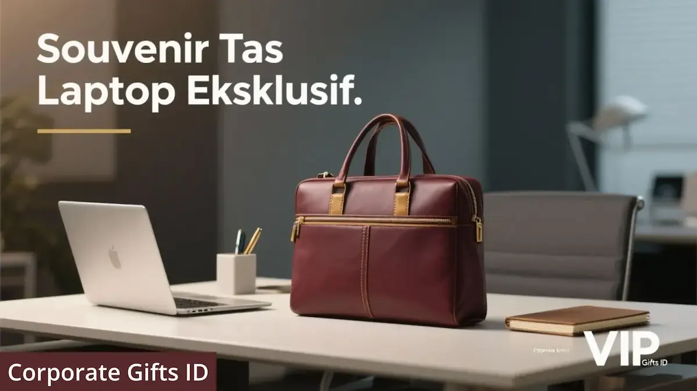

Corporate Gifts ID - Souvenir tas laptop eksklusif adalah tas kerja fungsional berkualitas premium yang dirancang dengan sentuhan branding korporat sebagai cinderamata promosi jangka panjang sekaligus bentuk penghargaan prestisius bagi karyawan berprestasi maupun klien VIP. Di dunia kerja modern yang serba dinamis dan menganut sistem hybrid working, tas laptop bukan lagi sekadar pelindung perangkat digital, melainkan elemen esensial dari gaya hidup dan identitas profesional seseorang.
Berbeda dari tas promosi biasa, standar tas laptop eksklusif ditentukan oleh kombinasi material tahan air (waterproof canvas) atau kulit sintetis PU tebal, bantalan busa penyerap guncangan (shockproof padding), resleting logam kokoh, serta teknik kustomisasi logo yang elegan dan subtil. Kisaran harga ideal untuk kualitas premium ini berada pada rentang Rp250.000 hingga Rp500.000 per unit, menghasilkan nilai pengembalian investasi (ROI) branding yang luar biasa tinggi.
Poin Kunci Pemilihan Souvenir Tas Laptop Eksklusif:
- Visibilitas Bergerak: Tas laptop dibawa bepergian ke kantor, kafe, penerbangan dinas, dan rapat klien sehingga logo perusahaan terlihat oleh audiens luas secara berulang.
- Branding Subtil: Kesan mewah tercipta dari teknik cetak logo minimalis seperti deboss kulit, plat logam kecil, atau label tenun di sudut bawah tas.
- Perlindungan Menyeluruh: Dilengkapi bantalan busa tebal (padding) dan strap velcro untuk melindungi laptop ukuran 13 hingga 15.6 inci dari benturan fisik.
- Segmentasi Jelas: Briefcase kulit untuk direksi & klien VIP, sedangkan backpack ergonomis anti-theft untuk karyawan operasional.
Mengapa Tas Laptop Menjadi Souvenir Kantor dengan Dampak Branding Terbesar?
Dalam strategi pengadaan merchandise perusahaan, tas kerja dan tas laptop menduduki peringkat teratas dalam hal utilitas dan retensi pakai:
1. Visibilitas Promosi Bergerak Tanpa Henti (Walking Billboard)
Setiap kali karyawan atau klien membawa tas laptop berlogo perusahaan Anda ke ruang publik - seperti lobi hotel bintang lima, gerbong kereta cepat, bandara, atau kafe tempat bekerja (co-working space) - tas tersebut bertindak sebagai media promosi berjalan yang memperkuat reputasi dan kesadaran merek perusahaan di hadapan eksekutif lainnya.
2. Efisiensi Biaya Pengadaan Jangka Panjang (High ROI)
Tas laptop dengan jahitan bar-tack kuat dan bahan premium memiliki masa pakai rata-rata 3 hingga 5 tahun. Dibandingkan souvenir habis pakai, biaya per impresi (cost per impression) dari sebuah tas laptop jauh lebih murah karena menghasilkan ribuan kali tayangan visual merek sepanjang masa pakainya.
3. Persepsi Nilai Tinggi dan Simbol Penghargaan Mendalam
Penerima hadiah secara otomatis mengasosiasikan tas laptop premium sebagai bentuk penghargaan yang berkelas dan tulus dari manajemen perusahaan, memperkuat ikatan kemitraan bisnis dan loyalitas kerja internal.
Tabel Matriks Tipe Tas Laptop, Material, dan Rekomendasi Target Penerima
Berikut adalah panduan pemilihan model tas laptop korporat yang disesuaikan dengan profil penerima dan karakteristik acaranya:
| Tipe Model Tas | Material Utama | Cocok untuk Segmentasi | Kesan yang Dibangun | Kisaran Budget per Unit | Fitur Unggulan |
|---|---|---|---|---|---|
| Briefcase / Messenger Bag Kulit | PU Leather Premium / Microfiber | Klien VIP, Direksi, Pejabat & Mitra Strategis | Sangat formal, prestisius, dan eksekutif | Rp350.000 - Rp500.000+ | Deboss logo halus, tali bahu empuk, kompartemen dokumen terpisah |
| Backpack Ergonomis Anti-Theft | Poliester Bimodal & Kanvas Waterproof | Karyawan internal, tim sales mobile, onboarding kit | Modern, dinamis, dan sangat fungsional | Rp250.000 - Rp380.000 | Port USB charging eksternal, resleting tersembunyi, slot koper (trolley sleeve) |
| Tote Bag Laptop Kanvas Tebal | Kanvas Katun Heavy Duty 14-16 oz | Event seminar kreatif, startup, workshop korporat | Kasual, stylish, ramah lingkungan, dan approachable | Rp150.000 - Rp250.000 | Sleeve laptop empuk di bagian dalam, penutup resleting atas, saku botol |
| Sleeve Case Laptop Minimalis | Kulit Sintetis PU + Neoprene Shockproof | Hadiah gathering, bundling seminar kit, gift set kantor | Ramping, minimalis, dan mudah dibawa ke dalam ransel | Rp120.000 - Rp200.000 | Lapisan dalam beludru lembut, saku aksesoris charger dan mouse |

Detail kompartemen pelindung laptop, material waterproof, dan teknik branding deboss logo korporat.
Standar Material yang Menentukan Kualitas dan Daya Tahan Tas
Keunggulan tas laptop souvenir terletak pada detail material pendukungnya. Tiga komponen berikut wajib dipastikan sebelum memproses pesanan massal:
1. Kulit Sintetis PU Premium & Kanvas Waterproof
Hindari material nilon tipis yang mudah sobek atau terkelupas. Kulit sintetis PU bertekstur jeruk atau kanvas nilon cordura tahan air memberikan perlindungan optimal terhadap cipratan hujan ringan saat mobilitas di luar ruangan.
2. Padding Busa Internal Tebal & Strap Pengaman Laptop
Kompartemen laptop wajib dilapisi busa peredam getaran (high-density EVA foam) dengan ketebalan minimal 6 mm hingga 10 mm di bagian depan, belakang, dan dasar tas, serta diperkuat strap velcro agar laptop tidak bergeser saat tas terguncang.
3. Resleting Logam YKK & Hardware Heavy Duty
Resleting yang macet adalah keluhan nomor satu pada tas souvenir murah. Memilih resleting berbahan logam atau ritsleting koil standar YKK dengan gantungan tarikan (zipper puller) metal tebal menjamin tas dapat dibuka-tutup dengan mulus ribuan kali.
Desain Kompartemen Cerdas untuk Penggunaan Harian
Sebuah tas kerja hanya akan digunakan rutin jika tata letak sakunya memudahkan pengorganisasian barang bawaan kerja:
- Slot Utama Laptop & Tablet: Dibuat khusus untuk laptop 14-15.6 inci dan tablet iPad/Android secara terpisah.
- Organizer Aksesoris Tech: Kantong terpisah untuk power bank, charger adaptor, kabel USB, dan flashdisk custom agar kabel tidak kusut.
- Saku Botol Minum / Tumbler: Slot samping elastis yang mampu memuat tumbler custom stainless steel tanpa risiko tumpah ke dalam ruang dokumen.
- Pilihan Warna Korporat Netral: Warna-warna berkelas seperti Charcoal Black, Deep Navy, Smoke Grey, dan Tan Brown agar serasi dengan pakaian kerja formal maupun kasual.
Teknik Branding Elegan: Tampil Mewah Tanpa Terkesan Mencolok
Kunci dari tas souvenir eksekutif adalah understated luxury - logo yang hadir secara halus namun memancarkan eksklusivitas:
- Deboss / Emboss Kulit: Logo ditekan tenggelam secara presisi pada patch kulit asli atau PU leather tanpa pewarnaan berlebih.
- Metal Plate Laser Engraved: Plat logam kecil berwarna hitam doff atau perak dengan ukiran nama perusahaan yang disematkan rapi di sudut tas.
- Subtle Woven Label: Label tenun berukuran kecil di garis jahitan samping tas yang memberikan nuansa seperti produk retail branded.
Panduan Alokasi Budget Pengadaan Sesuai Segmentasi Penerima
Rancang anggaran pengadaan tas laptop berdasarkan nilai strategis audiens sasaran:
- Untuk Klien VIP & Dewan Direksi (Rp350.000 - Rp500.000+): Prioritaskan tas model briefcase kulit sintetis dengan personalisasi monogram nama penerima.
- Untuk Karyawan & Onboarding Kit (Rp250.000 - Rp350.000): Pilih ransel laptop ergonomis tahan air dengan fitur kompartemen lengkap untuk pemakaian harian.
- Untuk Peserta Seminar & Konferensi (Rp150.000 - Rp250.000): Gunakan tote bag kanvas tebal kompartemen laptop ber-zipper atau sleeve case elegan.
Pertanyaan Seputar Souvenir Tas Laptop Eksklusif (FAQ)
Kesimpulan dan Konsultasi Souvenir Tas Laptop Custom
Souvenir tas laptop eksklusif menggabungkan kepraktisan perlindungan perangkat kerja dengan kekuatan promosi jangka panjang yang tak tertandingi. Dengan memilih paduan material bermutu tinggi, kompartemen cerdas, dan aplikasi logo berestetika subtil, perusahaan Anda menghadirkan hadiah korporasi bernilai prestisius yang dibanggakan penggunanya.
Jelajahi berbagai pilihan katalog souvenir kantor dan konsultasikan model tas laptop custom perusahaan Anda bersama konsultan spesialis di Corporate Gifts ID untuk mendapatkan sampel mockup digital 3D serta penawaran B2B terbaik.